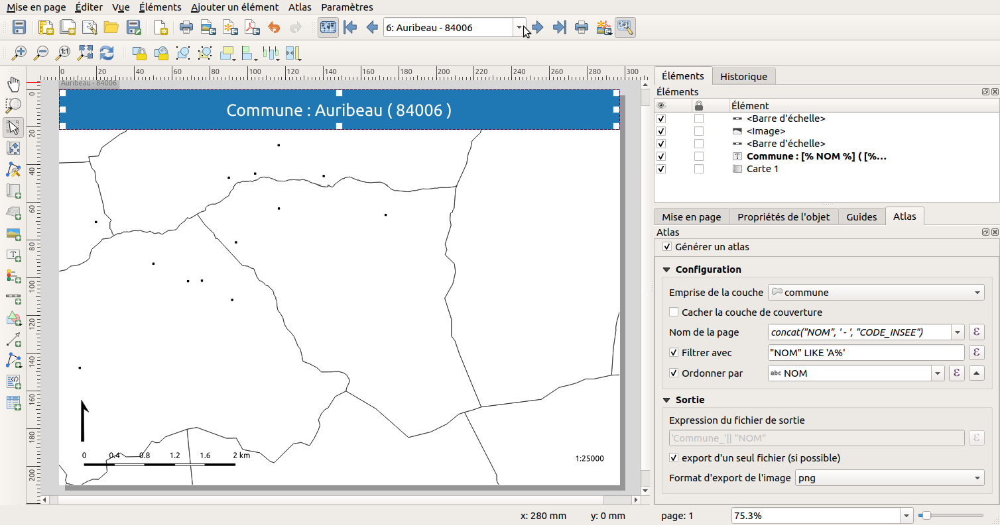
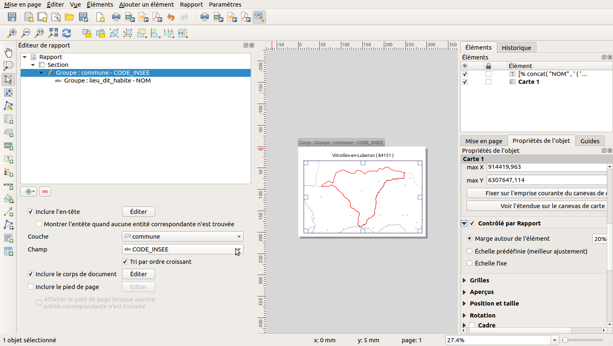

Mise en page d'une carte
Anciennement composeur d'impression dans QGIS 2
Documentation
Rappel sur les éléments d'une carte
- Menu
Projet▶Mise en page - Pour chaque projet QGIS, on peut créer une ou plusieurs mise en page.
- Un gestionnaire de mise en page permet d’ajouter, modifier, renommer, supprimer une mise en page.
- Chaque mise en page permet de créer sa carte à imprimer, en y insérant autant d’éléments que nécessaire.
- Une mise en page doit au moins contenir:
- carte
- légende
- barre d’échelle
- flèche Nord
- bloc texte : titre, sources, commentaire, etc.
- D'autres éléments sont possibles:
- bloc HTML : une page web (ou distante)
- image : logos (png, SVG)
- table attributaire
- grille régulière sur une carte (graticule)
- carte de localisation (à une échelle plus petite), ou alors un cartouche, pour le centre-ville
- ...
Utilisation de l'outil

Depuis QGIS 3, on peut modifier les propriétés de chaque page indépendemment: taille et rotation par exemple: faire clic-droit sur la page et Propriétés de la page.
En utilisant les boutons "plus" dans la barre d'outils à gauche, ajouter les éléments à votre page.
Dans le panneau Propriétés de l'objet, configurer les éléments en ouvrant les menus "tiroirs".
Chaque élément possède des propriétés qui lui sont propres.
Début de mise en page :

-
Question, que manque-t-il sur cette mise en page?
-
QGIS permet de créer des composeurs avec plusieurs pages. Par exemple, une 1ère page pour la carte et la légende, et une seconde page pour la table attributaire et des images.
Encore plus loin avec les expressions
Utiliser des expressions avec du texte dans les impressions : https://docs.qgis.org/3.10/en/docs/user_manual/print_composer/composer_items/composer_label.html#exploring-expressions-in-a-label-item
Générer un atlas
Pour le moment, nous n'avons fait qu'une carte statique. Imaginons désormais que nous souhaiterions faire une collection de PDF, une par commune de notre département.
Pour générer un atlas, il faut:
- l'activer, via le menu Atlas / Paramètres de l'atlas en cochant la case Générer un atlas
- de choisir la couche de couverture, par exemple les communes
- de choisir le champ ou l'expression qui donne le nom de l'objet, par exemple
concat("NOM", ' - ', "CODE_INSEE") - de choisir un filtre (optionnel):
"NOM LIKE 'A%'" - d'ordonner par un champ:
"NOM" - d'aller dans les propriétés de la carte, et de cocher Contrôlé par l'atlas et choisir la marge ou l'échelle pour zoomer sur chaque objet: Échelle prédéfinie
- d'activer l'aperçu pour tester: menu Atlas / Aperçu de l'atlas puis utiliser la barre d'outil Atlas pour passer d'une commune à l'autre

Documentation : https://docs.qgis.org/3.10/fr/docs/user_manual/print_composer/create_output.html#generate-an-atlas
NB:
- On peut utiliser des expressions QGIS dans les Étiquettes, dans les filtres, dans les propriétés configurables via des expressions.
- Par exemple, on souhaite factoriser le nom de l'organisation:
- Faire une variable au niveau global de QGIS dans l'onglet
Variables - Modifier une étiquette pour utiliser cette
variabledans la fenêtre des expressions pour l'utiliser.
- Faire une variable au niveau global de QGIS dans l'onglet
- On peut contrôler le style de l'objet courant (la commune) via une expression dans la symbologie d'une couche à l'aide des icônes à droite :

Pour la couleur de bordure :
CASE
WHEN @atlas_featureid = $id THEN 'red'
ELSE 'black'
END
Pour la largeur de bordure :
CASE
WHEN @atlas_featureid = $id THEN 1
ELSE 0.2
END
Note, ces icônes deviennent jaune lorsqu'il y a une expression.
Générer un rapport
Documentation : https://docs.qgis.org/3.10/fr/docs/user_manual/print_composer/create_reports.html
QGIS 3 ajoute un nouvel outil pour gérer finement un document à imprimer, via un objet qui s'appelle Rapport, qui permet :
- de définir une page d'entête et un pied de page
- d'insérer des pages dynamiquement dans des groupes et des sous-groupes de pages
L'idée est de pouvoir tout contrôler via QGIS, et d'éviter d'exporter une mise en page en PDF et de le reprendre avec un outil d'édition tiers. Pour cela, on utilise le menu Projet / Nouveau rapport.
L'interface du rapport est la même qu'une mise en page (cf ci-dessus), sauf qu'il y a un panneau supplémentaire, l'Éditeur de rapport sur la gauche
et que la barre d'outils Atlas n'existe plus.
L'arbre dans ce nouveau panneau permet de contrôler les paramètres du rapport :
- Rapport permet de créer/modifier l'entête et le pied de page de tout le document.
- Le bouton + vert permet d'ajouter des pages statiques ou une section de groupes de champs
- Chaque section de groupes de champs permet d'itérer sur les objets d'une couche, comme pour un atlas. Elle est caractérisée par une couche et un nom de champ, et peut avoir
- une entête
- un corps de document
- un pied de page
- On peut ajouter un sous-groupe de champs, si la couche fille contient un champ qui est aussi présent dans la couche parente et permet de faire le lien,
CODE_INSEEpar exemple. Cela devient donc un atlas dans un atlas. Concrétement en guise d'exemple, à l'échelle d'une région, nous pouvons itérer sur les départements, puis dans chaque département sur les communes.
Inconvénient: on ne peut pas filtrer sur les couches des sections de groupes de champs.
Astuce : on peut importer un modèle de mise en page dans un rapport.
